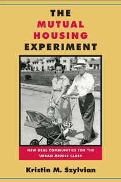

<body bgcolor="#FFFFFF" text="#000000" link="#0000FF" vlink="#CC0000" alink="#CC0000"><center><hr width="350" size="1" align="center" noshade>How the sale of World War II public housing to non-profit mutual home-ownership associations represents a road not taken in federal housing policy<hr width="350" size="1" align="center" noshade><p><a href="https://cdcshoppingcart.uchicago.edu/Cart/ChicagoBook.aspx?ISBN=9781439912058&&PRESS=temple" target="_top">Buy this book!</a> | <a href="https://cdcshoppingcart.uchicago.edu/Cart/Cart.aspx?PRESS=temple" target="_top">View Cart</a> | <a href="https://cdcshoppingcart.uchicago.edu/Cart/Cart.aspx?PRESS=temple" target="_top">Check Out</a></p><p></p></center><!--none//--><h1>The Mutual Housing Experiment</h1>
<H2>New Deal Communities for the Urban Middle Class</H2>
<h3>Kristin M. Szylvian</h3>
<P>cloth 1-4399-1205-X $79.50, Jun 15, <FONT COLOR=#990033>Available</FONT>
<br>paper 1-4399-1206-8 $29.95, Oct 16, <FONT COLOR=#990033>Available</FONT>
<br>Electronic Book 1-4399-1207-6 $79.50 <FONT COLOR=#990033>Available</FONT>
<BR> 294 pp
6x9
1&nbsp;map(s) 14&nbsp;halftones
</P><BLOCKQUOTE><I>"Highlighting little known connections between New Deal visionaries, labor leaders, and modernist architects, Kristin Szylvian’s important book tells the story of an ingenious WWII-era housing initiative aimed at America’s middle-income families. Mutual Housing offered a new kind of homeownership based on cooperative principles, community design, and cutting-edge construction techniques. Szylvian presents engaging vignettes of the experimental communities, some still in existence, organized on this basis. </I>The Mutual Housing Experiment<I> is a must-read for everyone interested in the history of American housing policy and design, as well as everyone searching for solutions to the housing problems of today."</i> <br>&#151<b>Gail Radford</b>, Professor of History, State University of New York at Buffalo, and author of <i>Modern Housing for America: Policy Struggles in the New Deal Era</i></I></BLOCKQUOTE>
<P>In 1940, the U.S. Federal Works Agency created an experimental housing program for industrial workers. Eight model communities were leased and later sold to the residents, who formed a non-profit corporation called a mutual housing association. Further development of housing under the mutual housing plan was stymied by controversies around radical politics and race, and questions over whether the federal government should be involved in housing policy.
<P>In <I>The Mutual Housing Experiment</I>, Kristin Szylvian examines 32 mutual housing associations that are still in existence today, and offers strong evidence to show that federal public housing policy was not the failure that critics allege. She explains that mutual home ownership has not only proven its economic value, but has also given rise to communities characterized by a strong sense of identity and civic engagement.
<P>The book shows that this important period in urban and housing policy provides critical lessons for contemporary housing analysts who continue to emphasize traditional home ownership for all wage-earners despite the home mortgage crisis of 2008.
<BR>&nbsp;<h2>Excerpt</h2><P>Excerpt available at <a href="http://www.temple.edu/tempress">www.temple.edu/tempress</a></p>
<BR>&nbsp;<h2>Reviews</h2>
<p><i>"Kristin Szylvian has made an important contribution to the literature on the role of government housing betterment. She has produced a well-crafted study of the history of the Mutual Housing Movement that explains why this project that seemed so promising to some never came to full fruition despite strong support from unions and veterans groups. </i>The Mutual Housing Experiment<i> is an incredibly thorough study based on extensive research, well organized and effectively written. This book will become indispensable for those wanting a clearer understanding the tensions surrounding wartime housing policy."</i> <br>&#151<b>Robert B. Fairbanks</b>, Professor of History at the University of Texas at Arlington, and author of <i>The War on Slums in the Southwest: Public Housing and Slum Clearance in Texas, Arizona, and New Mexico, 1935-1965</i>
<p><i>"Szylvian treats readers to the fruits of her extensive research locating and piecing together the records of many government agencies and individuals...to tell the story of the mutual housing program during and immediately after WWII. The Federal Works Agency created the Mutual Plan, but the WWII housing crisis (the 1940s are an understudied era in housing policy) provided a critical opportunity for reformers committed to cooperative housing. Szylvian traces the origins of the Mutual Plan and then focuses on eight projects in five states.... Primarily, though, the author’s intent was to detail policy struggles and widespread lack of political support; mutual housing projects remained an 'experiment' rather than a stepping-stone to a new housing policy. The epilogue provides a look at a few of the communities today and includes statements from the residents themselves, emphasizing the connection between policy and people. Summing Up: Recommended."</i>
<br>&#151<b><i>CHOICE </i></b>
<p><i>"Expanding on the complexity of federal housing policy, Kristin M. Szylvian examines experiments on the public housing side of federal policy during the 1930s, 1940s, and 1950s in The </i>Mutual Housing Experiment<i>. In addition, Szylvian attaches the housing policy narrative to the life story of Lawrence Westbrook, an advocate whom today political scientists would call a policy entrepreneur.... Szylvian does great service...in tracking down the histories of the eight residential communities built under Westbrook’s Mutual Ownership Defense Housing Division and the thirty-five mutual housing associations that still manage Roosevelt-era communities."
</i><br>&#151<b><i>American Historical Review</i></b>
<p><i>"Kristin M. Szylvian's meticulously researched study of the mutual housing movement from the New Deal to the 1950s provides rich insights into urban conditions of the time and national public policy debates. She illustrates ably that the movement for a national mutual housing program (with lodging built by the federal government and sold to resident-owned cooperatives) faced so many challenges that it is remarkable that any communities were built."</i> <br>&#151<b><i>Journal of American History</i></b>
<BR>&nbsp;<h2>Contents</h2><P>
<p>Acknowledgments
<br>List of Acronyms and Abbreviations
<br>Introduction
<br>
<br>1. The New Deal Origins of Mutual Housing
<br>2. Mutual Housing: “Contingency-Proof” Home Ownership for Labor
<br>3. Mutually Compatible? Mutual Housing and Modern Architecture
<br>4. Mutual Housing Offers a “New Day in Housing”
<br>5. The Mutual Plan’s “Arrested” Development
<br>6. No Fair Deal for Mutual Housing
<br>7. Mutual Housing: “America’s New Housing Economy”?
<br>
<br>Epilogue
<br>Appendix
<br>Note on Sources
<br>Notes
<br>Index
</P><BR>&nbsp;<H2>About the Author(s)</H2>
<P><b>Kristin M. Szylvian</b> is Associate Professor of History and Library and Information Science at St. John's University in New York City.</P>
<BR><H2>Subject Categories</H2>
<p><A HREF="/tempress/urban.html" TARGET="_top">Urban Studies</a>
<BR><A HREF="/tempress/history.html" TARGET="_top">History</a>
<BR><A HREF="/tempress/political.html" TARGET="_top">Political Science and Public Policy</a>
</p>
<BR><h2 class="inpageheading">In the series</H2>
<P><I><a href="http://www.temple.edu/tempress/urban_life.html" onMouseOver="window.status='Click for other books in this series!'; return true;" onMouseOut="window.status=''; return true;" target="_top">Urban Life, Landscape, and Policy</a></i>, edited by Zane L. Miller, David Stradling, and Larry Bennett.
</p><p><i>Urban Life, Landscape, and Policy Series</i>, edited by Zane L. Miller, David Stradling, and Larry Bennett, features books that examine past and contemporary cities, focusing on cultural and social issues. The editors seek proposals that analyze processes of urban change relevant to the future of cities and their metropolitan regions, and that examine urban and regional planning, environmental issues, and urban policy studies, thus contributing to ongoing debates.</p>
<p align="center"><a href="https://cdcshoppingcart.uchicago.edu/Cart/ChicagoBook.aspx?ISBN=9781439912058&&PRESS=temple" target="_top">Buy this book!</a> | <a href="https://cdcshoppingcart.uchicago.edu/Cart/Cart.aspx?PRESS=temple" target="_top">View Cart</a> | <a href="https://cdcshoppingcart.uchicago.edu/Cart/Cart.aspx?PRESS=temple" target="_top">Check Out</a></p><p><font face="Arial" size="1"><a href="copyright.html" onMouseOver="window.status='Web Copyright Policy';return true;" onMouseOut="window.status=''" title="Web Copyright Policy">&copy;</a> 2016 <a href="http://www.temple.edu" target="new" onMouseOver="window.status='Link to Temple University home page';return true;" onMouseOut="window.status=''" title="Link to Temple University home page">Temple University</a>. All Rights Reserved. http://www.temple.edu/tempress/titles/2347_reg.html</font></p>